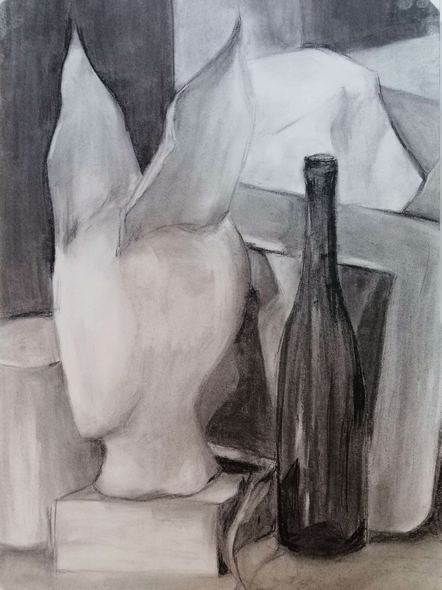
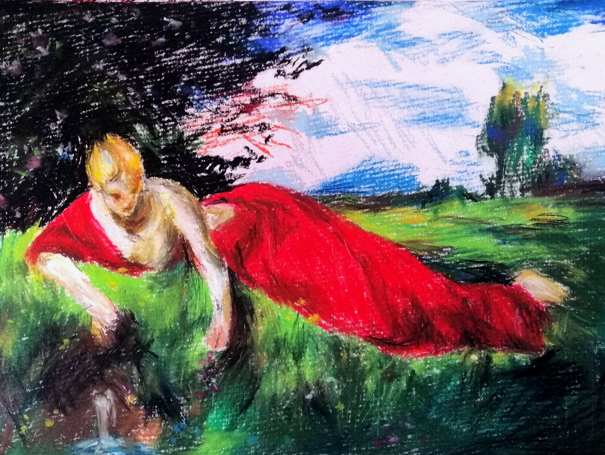
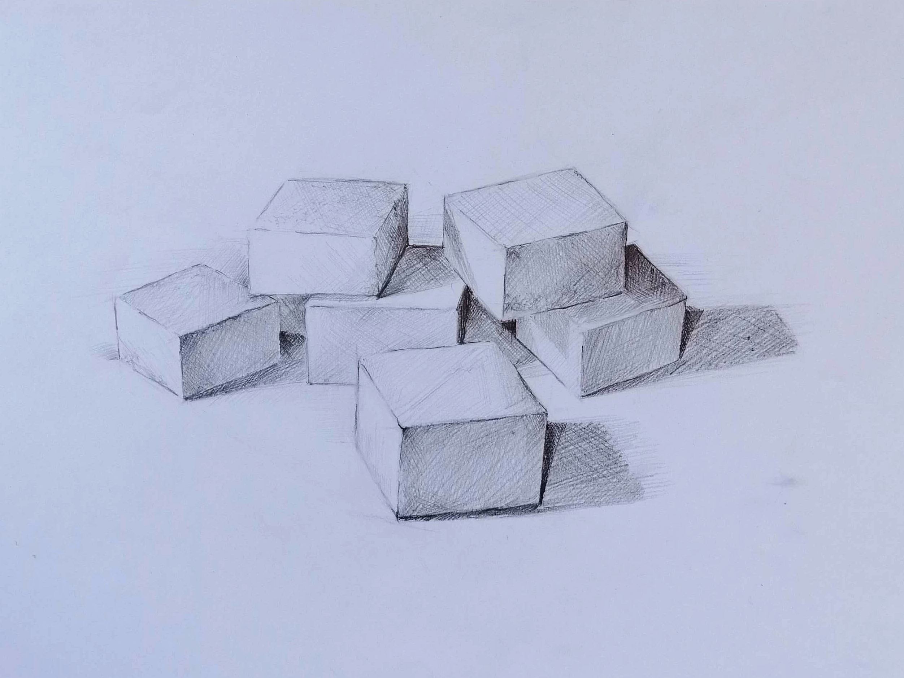
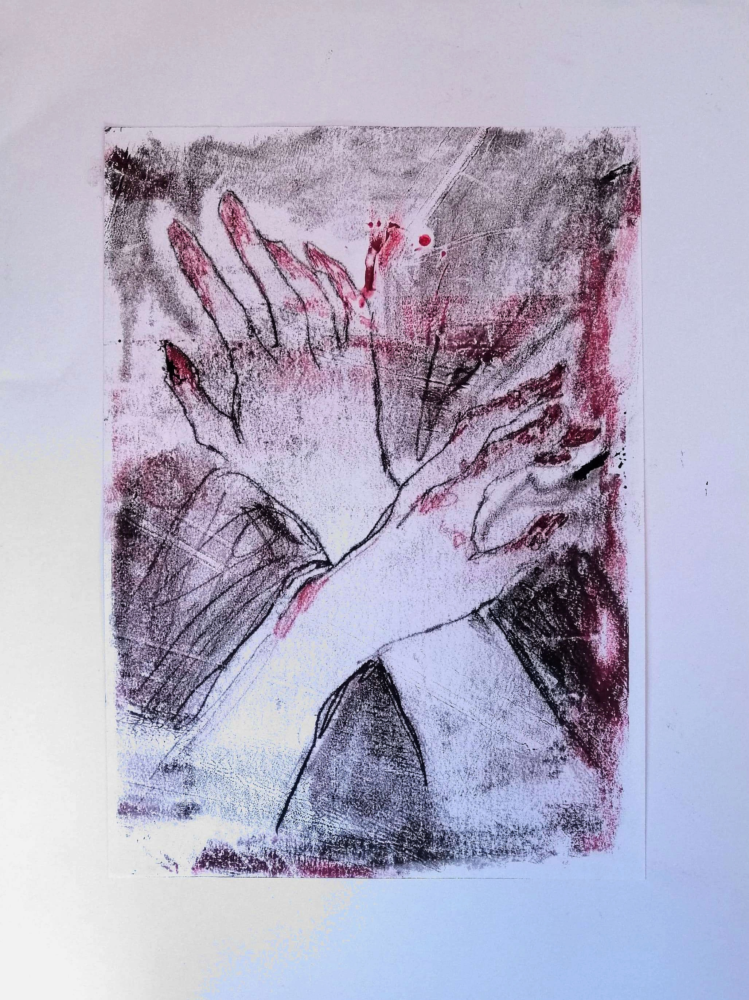
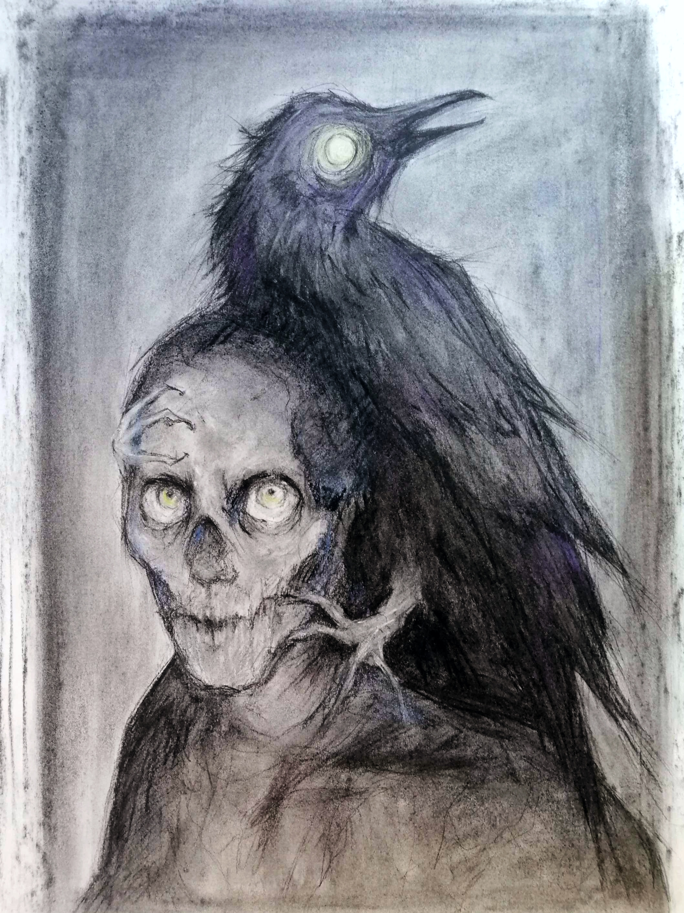

A galéria egy átfogó gyűjtemény eddigi munkáimból.
Célja minél szélesebb körben bemutatni képességeimet.
Rembrandt másolat Grafit

Csendélet SzénGyors figura rajzok GrafitOdilon Redon : A sárga köpeny másolat Pasztel

Szinyei Merse Pál : Pramen másolat PasztelMűszaki rajz Grafit

Kockacukrok GrafitMűszaki rajz Grafit

Kezek Monotípia

Illusztráció Edgar Allan Poe : A holló verse alapján Szén